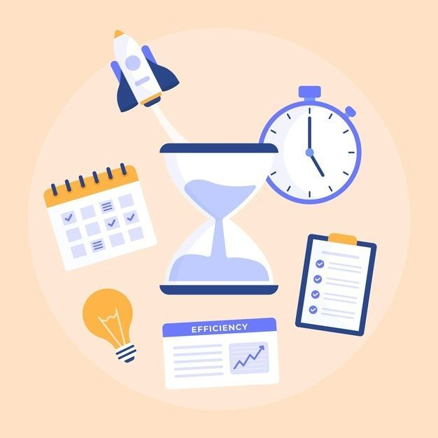

Welcome to Task Manager
Task Manager is a simple and elegant web application designed
to help you manage your daily activities efficiently.
Organize your tasks, track completed work, stay focused,
and write reminders all in one calm workspace.

Completed Tasks
Well done! Keep up the progress.
Daily Focus
Simple habits to improve productivity:
- ✔ Start the day with a plan
- ✔ Focus on one task at a time
- ✔ Avoid distractions
- ✔ Take short breaks
Notes & Reminders
Write quick notes or reminders for yourself.